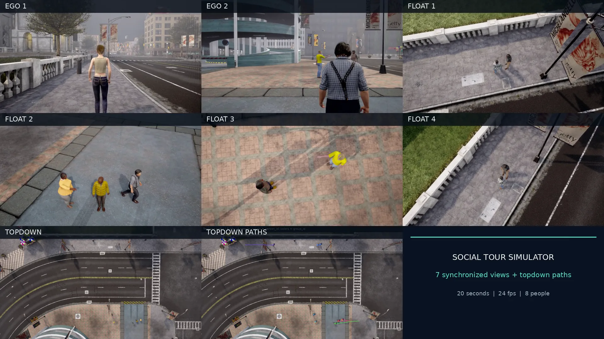
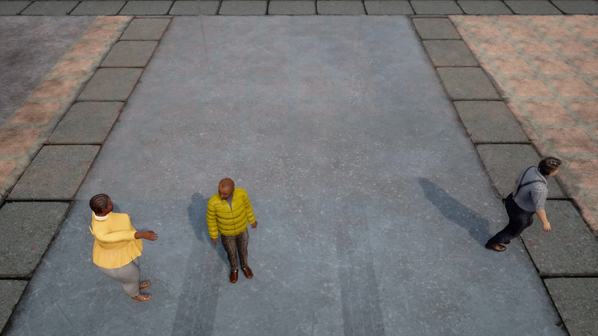
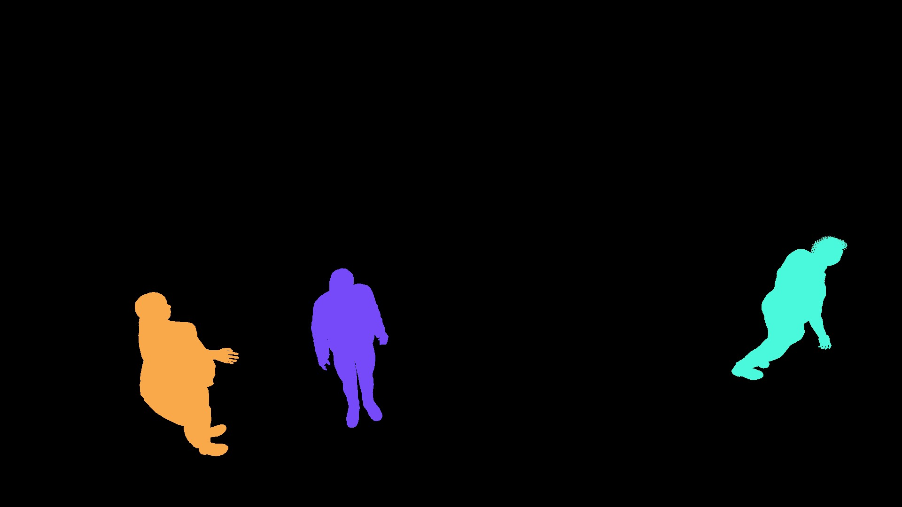
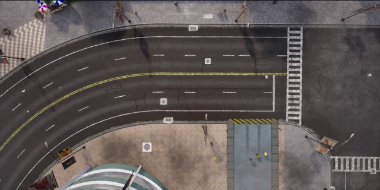
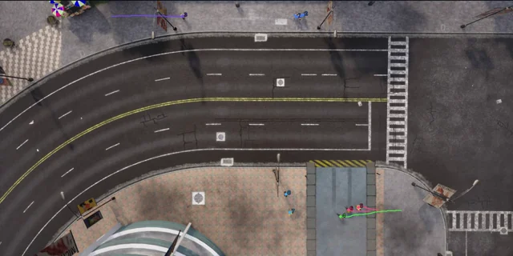

Two ego views, four floating views, and one overhead view. The bottom row pairs the overhead image with the trajectory overlay.
Playback is unavailable in this browser. Open the MP4.
Recorded run
rv029
People
8
Synchronized views
7
Duration
20 seconds
Camera selection
Screen candidate viewsProjected skeleton size
Check rendered visibilityPerson masks and depth
I chose two egocentric views for the walking tour, four floating views to observe particular groups in more detail, and an overhead view with a trajectory overlay for the whole scene. The two egocentric cameras are independent sensors that follow planned routes frame by frame at pedestrian eye height, with a small vertical bob to simulate a walking gait.
A person inside the frame can still be occluded or too small to distinguish. The planner screens candidate floating views using projected skeleton size, then checks rendered depth and person-ID masks for visibility. In rv029, all four floating views recorded zero measured near-camera obstruction from static geometry, and all eight person IDs appeared across the six non-overhead views.
Whether training with this synthetic data improves social group detection on real videos remains untested.
BEI BI started as a card game I came up with in elementary school. I used AI-assisted coding to turn it into a browser game and explore how AI could support game design, development, and testing.
Last-place rate by turn position
150 bot games · 6 players · 50 HP · Combined-score strategy
0%20%40%
Position 138.0%
Position 222.7%
Position 316.0%
Position 48.0%
Position 55.3%
Position 610.0%
Win rates miss which positions are most often eliminated first. A follow-up would test adding an end-of-turn refill alongside the current start-of-turn refill.
Icarus
A Flight Over the Sea · Team course project
I developed the playable prototype. Flying higher earns more points and brings the wax wings closer to melting. The score from each flight goes into a purse that can buy wings for a single run.
Social Tour Simulator
Multiview simulation for social group detection
My role · Designed the seven-camera layout and the walking-route planning approach, with AI-assisted implementation.

Play 20-second demoPlayback is unavailable in this browser. Open the MP4.
rv029Camera selection
I chose two egocentric views for the walking tour, four floating views to observe particular groups in more detail, and an overhead view with a trajectory overlay for the whole scene. The two egocentric cameras are independent sensors that follow planned routes frame by frame at pedestrian eye height, with a small vertical bob to simulate a walking gait.
A person inside the frame can still be occluded or too small to distinguish. The planner screens candidate floating views using projected skeleton size, then checks rendered depth and person-ID masks for visibility. In
rv029, all four floating views recorded zero measured near-camera obstruction from static geometry, and all eight person IDs appeared across the six non-overhead views.Whether training with this synthetic data improves social group detection on real videos remains untested.




Credits · Event-Driven Storytelling (Lim et al.) · CARLA (simulation and town assets) · Inter-X (interaction motion)